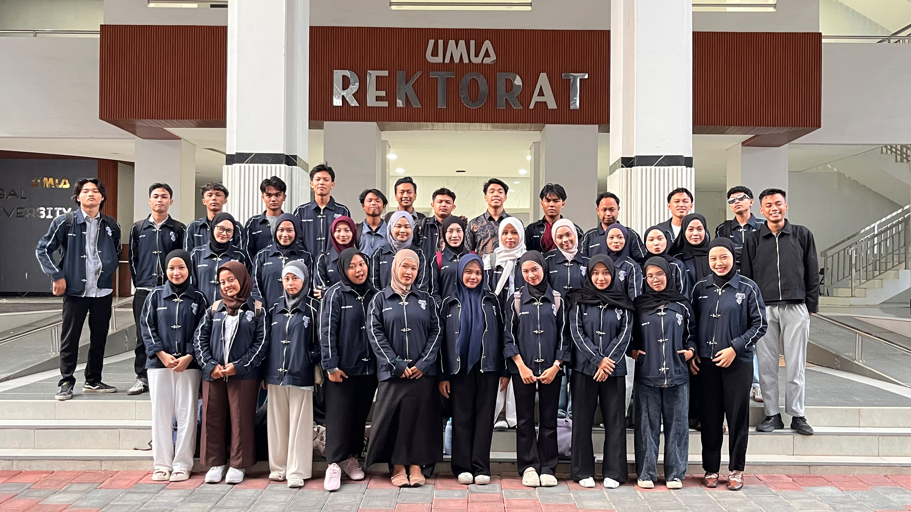

Pengembangan Kapasitas & Aspirasi
Pendampingan mahasiswa, kajian isu strategis, serta kepedulian sosial kemanusiaan.
Portal Badan Eksekutif Mahasiswa Fakultas Ilmu Kesehatan Universitas Muhammadiyah Lamongan untuk kaderisasi, advokasi, edukasi publik, dan program kerja mahasiswa.

Kabinet 2026Pembekalan kepemimpinan, manajemen organisasi, dan semangat kolaborasi mahasiswa kesehatan untuk menjawab tantangan kampus maupun masyarakat.
Pendampingan mahasiswa, kajian isu strategis, serta kepedulian sosial kemanusiaan.
Publikasi agenda, edukasi kesehatan, dan dokumentasi kegiatan resmi BEM FIKES UMLA.